5月4日下午，学校在清水河校区举行2014-2015年度学生表彰大会，隆重表彰在过去一年里涌现出的优秀集体和个人。李言荣校长勉励成电学子“养成优秀的习惯，开创卓越的事业。”
今年的表彰大会首次邀请了院士、国家级教学名师、长江学者、国家杰出青年科学基金获得者和国家“青年千人计划”入选者等校内杰出人才代表参加。李言荣、罗佳慧、朱宏、熊彩东、王亚非、杨晓波、申小蓉、胡皓全、曾勇等校领导出席表彰大会，与中国工程院院士李乐民、国家级教学名师黄廷祝、长江学者特聘教授刘永、国家杰出青年科学基金获得者彭怡、国家“青年千人计划”入选者牛晓滨、我校第二届“我最喜爱的老师”祝小宁、“校优秀辅导员”张铱晗等共同为获奖代表颁奖。
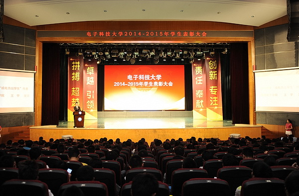国家奖学金、国家励志奖学金、百人会英才奖获奖代表，国内外科技、文化、体育等各类竞赛获奖代表，社会实践优秀团队（个人）、志愿者优秀团队（个人）代表，创新创业优秀团队代表，优秀班集体获奖代表，红旗分团委、优秀学生会、优秀研分会获奖代表，2014年度“陈邦清班集体”代表和2014年度“成电杰出学生”从颁奖嘉宾手中接过沉甸甸的荣誉证书，表示要继续弘扬成电精神，将优秀品质传承下去。
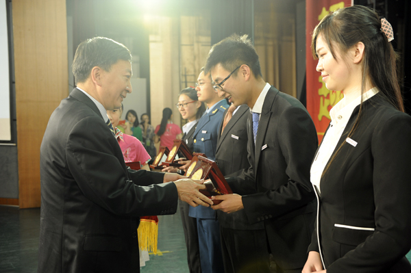 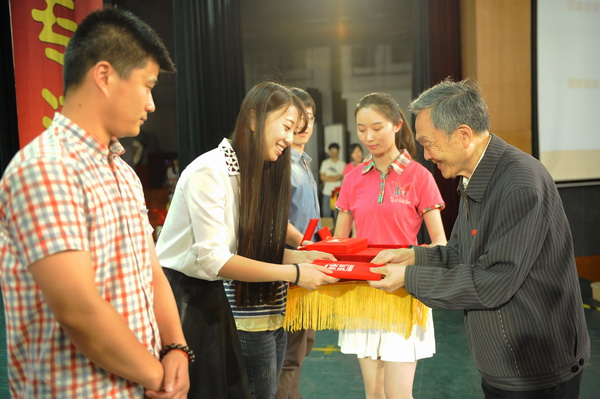 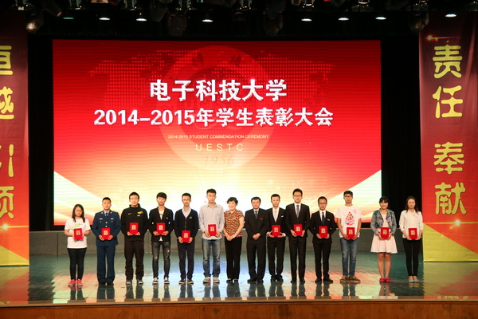 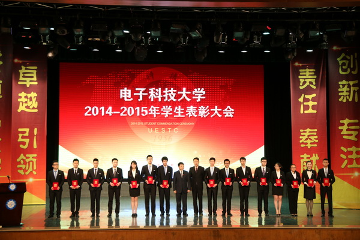 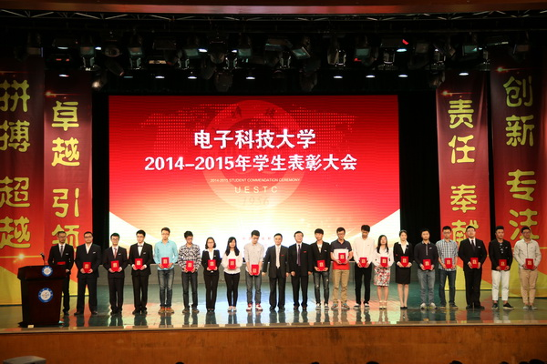 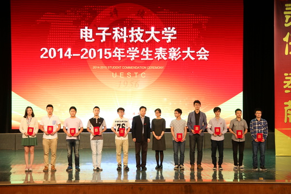 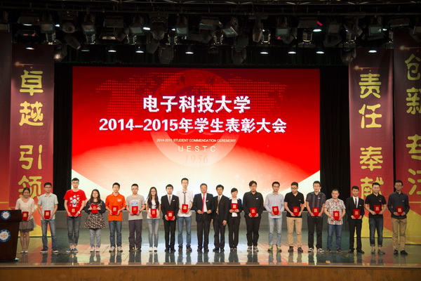 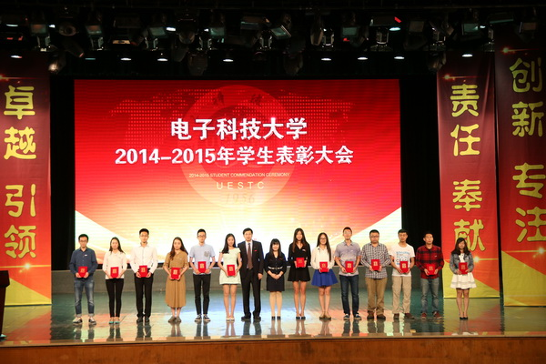 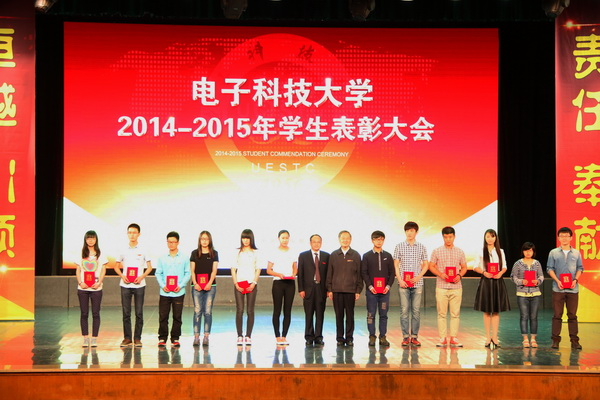李言荣为2014年度“成电杰出学生”颁发了专属勋章，代表学校和在外出差的校党委书记王志强向获奖的集体和个人表示衷心祝贺，向一直辛勤耕耘、潜心育人的老师们表示衷心感谢，勉励成电学子“养成优秀的习惯，开创卓越的事业”。他说，60年前，一群优秀的中国电子科技领域青年人才在成电起步，开创了成电人青春的事业，并通过艰苦的奋斗把“电子类院校排头兵和民族电子工业摇篮”这两块牌子牢牢树立在成电的土地上，优秀的烙印，在成电建立之初就被深深打上。把优秀变成习惯，是一代代成电人孜孜不倦的追求。人的一生在某一个阶段、在某一件事上做到优秀并不难，难的是做什么都优秀，如果能把优秀变成习惯，那就是卓越了。
李言荣表示，大学是人生成长的倍增器，也是人生差异的放大器，希望同学们能再努力一点，在大学期间把优秀变成习惯，把习惯外化为行动，用行动开创卓越的事业。为此，他对大家提出三点希望：第一，卓越的事业要有健康的体魄来保障，运动中的青春最美丽，这与劳动最光荣非常类似，同学们在校园中既要读书学知识，又要锻炼强身体，这是优秀成电学子骨子里该有的基因。第二，卓越的事业要有崇高的理想来指引，成电培养的学生绝不仅仅是为了找一份好的工作，而是为国家20年乃至30年后储备引领性人才，用使命指引理想、用知识报效国家，这是不改初心的成电人永不更改的品格。第三，卓越的事业要有踏实的行动来实现，再美好的蓝图，没有行动也永远还是一张纸，拼搏、超越、卓越、引领、创新、专注、责任、奉献，这些都是成电人矢志不渝的追求。
李言荣说，从优秀到卓越，就意味着学无止境、追求无止境。要实现这个目标，除了要掌握专业知识，还要人文艺体全面发展，希望同学们砥砺自己的品行、完善自己的人格、夯实自己的底蕴，在大学里找到自己的优秀基因，成就大家共同的卓越事业。
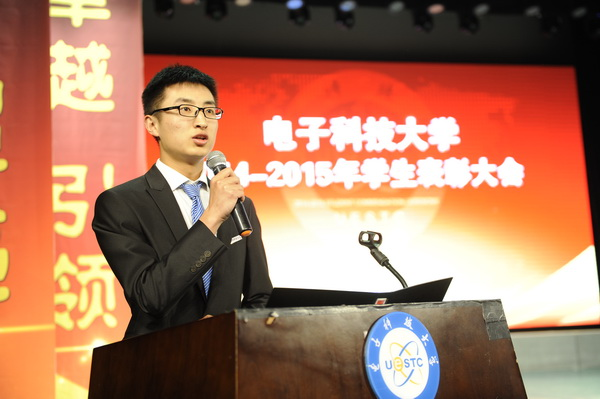2014年度“成电杰出学生”、物理电子学院学生王宇讲述了自己追梦路上的成长故事。即将赴清华大学继续深造的他代表全体获奖同学感谢父母多年的养育之恩，感谢老师的谆谆教诲和无微不至的关怀，感谢母校提供的良好成长环境和发展平台，祝愿同学们能够百尺竿头、更进一步，取得更加辉煌的成绩，让梦想之花在成电绽放！
表彰大会上，“筑梦成电 绽放青春”成电之星网络互动平台正式上线。该平台记录了2014年度“成电杰出学生”的成长故事，分享了50余个优秀班集体的成长之路，汇集了全校200余个优秀学子或集体的网络空间。通过此平台，我校学生可以与优秀的前辈近距离接触，在网络空间交流学习，带动更多的同学加入优秀行列。
学校各职能部门、各学院负责人和师生代表共一千余人参加表彰大会。
附：
2014年“陈邦清班集体”名单：（共15个）
英才实验学院2011001010班
通信与信息工程学院2011019010班、2011019060班
电子工程学院2011029090班、2011029100班
微电子与固体电子学院2011030010班
物理电子学院2011043030班
光电信息学院2011050403班、2011050507班
计算机科学与工程学院 2011060040班
自动化工程学院2011073040班
生命科学与技术学院2011092010班
数学科学学院2011109010班
经济与管理学院2011117020班
政治与公共管理学院2011127020班
“成电杰出学生”名单：（共20人）
本科生：英才实验学院 王心迪 通信与信息工程学院 籍 然
电子工程学院 李 建 物理电子学院 王 宇
光电信息学院 邵春雨 自动化工程学院 户孝围
生命科学与技术学院 崔亚松 政治与公共管理学院 王轶岱
能源科学与工程学院 张 雪 信息与软件工程学院 黄震昕研究生： 通信与信息工程学院 宋贝贝 电子工程学院 朱全江
微电子与固体电子学院 刘沈厅 物理电子学院 陈炳章
光电信息学院 苏元捷 计算机科学与工程学院 曾 伟
自动化工程学院 成 军 数学科学学院 顾先明
信息与软件工程学院 李有福 校研究生会 周 诣